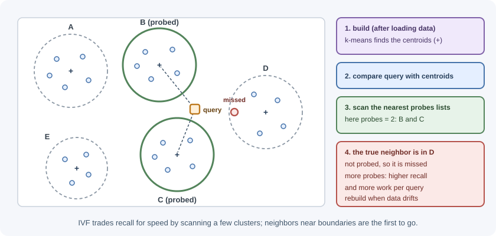

Vector Databases and Indexes¶
Once TaskFlow has embeddings for every note chunk, it needs somewhere to keep them and a fast way to find the nearest ones to a question. That is the job of a vector index, offered by vector databases such as Pinecone, Qdrant, Weaviate, Chroma, and Milvus, by general databases with vector support such as PostgreSQL with pgvector and MongoDB, and by libraries such as FAISS.
This lesson compares those options, explains how the two dominant index families work (HNSW graphs and IVF clusters), measures the trade-off between recall and latency on real runs, and covers the part that causes most production incidents: metadata filtering and tenant isolation. It ends with working code for pgvector and MongoDB Vector Search. Choosing the embedding model is covered in embedding models and dimensions.
Why it matters¶
Exact nearest-neighbor search compares the query with every stored vector. That is fine for a few thousand chunks and too slow for millions: the work grows linearly with the collection. Approximate nearest-neighbor (ANN) indexes answer in a fraction of the time by examining only a small, well-chosen part of the data, and the price is that they sometimes miss a true neighbor. How much they miss is a setting you choose, and it is easy to choose badly without measuring.
The index also decides what happens when a search has conditions. A query such as "notes in workspace 42 about the billing migration" combines similarity with a filter, and a naive combination can return too few results, or results from another tenant if the filter is missing. In a multi-tenant product like TaskFlow, the second failure is a data leak, so isolation must be designed into the index layout and the query path, not left to each caller.
Real-world usage¶
- Spotify. In Introducing Voyager (2023), Spotify describes the HNSW-based library (built on hnswlib) that succeeds Annoy for its personalization, recommendation, and search systems. It reports more than 10 times Annoy's speed at the same recall, or up to 50% more accuracy at the same speed, and up to 4 times less memory using 8-bit floating-point storage.
- Meta. The 2017 post Faiss: A library for efficient similarity search explains why Facebook AI Research built FAISS for billion-scale search: compressing vectors (for example with product quantization into 20-byte codes) is what lets an index of that size fit in memory, and GPU implementations run 5 to 10 times faster than the CPU versions.
- Supabase. In
pgvector v0.5.0: Faster semantic search with HNSW indexes
(2023), Supabase measured HNSW at three times the queries per second of
IVFFlat with better accuracy on 224,482 vectors of 1,536 dimensions,
and showed the tuning curve: raising
ef_searchfrom the default 40 to 100 reached 0.98 accuracy@10, and 250 reached 0.99. - Pinecone. The multitenancy guide recommends one namespace per tenant on serverless indexes: each namespace is stored separately, a query only pays for the namespace it reads, and deleting a tenant is nearly instant, whereas a shared namespace with a metadata filter scans every tenant's data.
Popular tools and providers: pgvector for PostgreSQL, MongoDB Vector Search, Pinecone, Qdrant, Weaviate, Chroma, Milvus, FAISS, Elasticsearch and OpenSearch vector fields, and benchmark suites such as ANN-Benchmarks.
How it works¶
Exact search and why approximate indexes exist¶
Exact search computes the distance from the query to all N stored
vectors of d dimensions, about N x d multiply-adds, and keeps the best
k. It always finds the true neighbors, which makes it the reference for
measuring everything else. In the experiment below, an exact scan over
50,000 vectors of 128 dimensions took about 30 ms per query in PGlite
(PostgreSQL compiled to WebAssembly); at ten times the data it takes
roughly ten times as long.
ANN indexes organize vectors ahead of time so a query visits only a neighborhood. Their quality is measured as recall@k: the share of the true top-k neighbors (from an exact scan) that the index returns. Recall of 0.95 at k = 10 means that, on average, 9.5 of the 10 true nearest chunks came back.
Where vectors can live¶
| Option | What it is | Indexes | Filtering and tenancy | Good fit |
|---|---|---|---|---|
| pgvector | PostgreSQL extension (0.8.7 as of November 2026) | HNSW, IVFFlat; halfvec, bit, sparsevec types |
SQL WHERE, iterative index scans, row-level security, partitioning |
Teams already on PostgreSQL; vectors next to relational data |
| MongoDB Vector Search | Vector search in MongoDB: Atlas, self-managed, and local Atlas deployments | HNSW (default) or flat; scalar and binary quantization | Pre-filter on fields indexed as filter |
MongoDB apps such as TaskFlow; keeps chunks next to documents |
| Pinecone | Managed vector database (serverless indexes) | Managed for you | Metadata filters; one namespace per tenant | No database to operate; many tenants |
| Qdrant | Open-source vector database and Qdrant Cloud | HNSW with payload-aware links, quantization | Payload indexes; is_tenant for one collection with many tenants |
Heavy filtering, self-hosting or cloud |
| Weaviate | Open-source vector database and Weaviate Cloud | HNSW (default), flat, dynamic, HFresh | Filters; native multi-tenancy with one shard per tenant | Many tenants of very different sizes; built-in hybrid search |
| Chroma | Open-source (Apache 2.0) retrieval database; local, self-hosted, or Chroma Cloud | Dense, sparse, and hybrid search | Metadata filtering | Prototypes and small to medium apps; Python and JavaScript workflows |
| Milvus | Open-source distributed vector database (docs v3.0 as of November 2026) | FLAT, IVF and HNSW families, DiskANN, GPU indexes | Database, collection, partition, or partition-key tenancy | Very large collections; teams that want index choice |
| FAISS | C++ and Python library from Meta, not a database | Flat, HNSW, IVF, PQ and combinations; CPU and GPU | None built in: you add storage, filtering, and replication | Offline batch jobs, research, building a custom service |
Two questions decide most choices. Does the team already run a database that has good vector support? Then keeping vectors next to the source data avoids a second system to secure, back up, and keep in sync. Does the workload need something that database cannot do well, such as billions of vectors, very heavy filtering, or thousands of tenants with strict isolation? Then a dedicated vector database earns its operational cost.
HNSW: a layered graph¶
![Diagram: three layers of a hierarchical navigable small world graph; the top layer has a few nodes with long links, the middle layer more nodes, and the bottom layer every vector with short links to close neighbors; a query enters at the top, moves greedily to the node closest to the query on each layer, drops down a layer, and finally explores the bottom layer with a candidate list of size ef_search before returning the best k; larger m means more links per node, larger ef_construction means a better graph built more slowly, and larger ef_search means higher recall at higher latency.](../hnsw-layers.svg)
Hierarchical Navigable Small World graphs (Malkov and Yashunin) connect every vector to some of its nearest neighbors. Each vector is also assigned a maximum layer at random with an exponentially decaying probability, so the upper layers hold few vectors with long links, like the express lanes of a skip list. A search starts at the top, walks greedily toward the query, drops a layer, repeats, and finally explores the bottom layer while keeping a candidate list. The paper shows that this gives logarithmic scaling of search work.
The knobs, with pgvector's names and defaults:
| Parameter | Meaning | Effect of raising it |
|---|---|---|
m (default 16) |
Links per node | Better recall, more memory, slower build |
ef_construction (default 64) |
Candidate list size while building | Better graph, slower build |
hnsw.ef_search (default 40) |
Candidate list size while searching | Better recall, higher latency |
HNSW suits most online workloads: high recall at low latency, no training step, and inserts that update the graph immediately (pgvector can create an HNSW index on an empty table). The costs are memory, because the graph should stay in RAM, and build time: in the experiment below, building the HNSW index took about 18 times longer than IVFFlat on the same data.
IVF: clusters and probes¶

An inverted file (IVF) index runs k-means on the data to find lists
centroids (FAISS calls them nlist) and files every vector under its
nearest centroid. A query compares itself with the centroids, then scans
only the vectors in the nearest probes lists (nprobe in FAISS). A true
neighbor that sits just across a cluster boundary is missed unless its
cluster is probed too.
pgvector's guidance for IVFFlat is to create the index after the table
has data, to start with rows / 1000 lists up to one million rows and
sqrt(rows) above that, and to start with sqrt(lists) probes (the
default is 1). Because the clusters reflect the data at build time, an
IVF index drifts as the data changes and needs periodic rebuilding. IVF
builds quickly and uses less memory than HNSW, and IVF combined with
product quantization (IVF-PQ) is a standard way to fit very large
collections into memory.
Recall compared with latency¶
![Diagram: a chart of recall at 10 against milliseconds per query, measured with pgvector in PGlite on 50,000 clustered 128-dimension vectors; the HNSW curve rises from 0.647 recall at 1.5 ms with ef_search 10, through 0.851 at 1.7 ms with ef_search 40, to 0.963 at 5.1 ms with ef_search 320; the IVFFlat curve with 50 lists rises from 0.464 at 1.6 ms with one probe to 0.747 at 4.0 ms with eight probes; an exact scan reaches recall 1.0 at 29.6 ms; both indexes trade recall for speed, and HNSW reaches higher recall at the same latency here.](../recall-latency-tradeoff.svg)
Every ANN setting buys speed with recall. These numbers come from real runs: pgvector 0.8.7 inside PGlite on 50,000 synthetic, clustered, unit-length vectors of 128 dimensions, with 100 queries and k = 10.
| Index and setting | Recall@10 | Milliseconds per query |
|---|---|---|
| Exact scan (no index) | 1.000 | 29.6 |
HNSW, ef_search = 10 |
0.647 | 1.5 |
HNSW, ef_search = 40 (default) |
0.851 | 1.7 |
HNSW, ef_search = 160 |
0.933 | 3.6 |
HNSW, ef_search = 320 |
0.963 | 5.1 |
| IVFFlat, 50 lists, 1 probe | 0.464 | 1.6 |
| IVFFlat, 50 lists, 8 probes | 0.747 | 4.0 |
Building took 38.4 seconds for HNSW (m = 16, ef_construction = 64)
and 2.1 seconds for IVFFlat. Absolute times are slower than a native
server, and synthetic data is not your data, so treat the shape as the
lesson: recall climbs steeply at first and then flattens, while latency
keeps growing. The FAISS script in the practical examples shows the same
shape natively, at a fraction of a millisecond per query.
Tune with your own data:
- Take a few hundred real or realistic queries.
- Compute their exact top-k with a full scan (in PostgreSQL, disable
index scans inside a transaction with
SET LOCAL enable_indexscan = off). - Run the same queries through the index at several settings and compute recall@k and latency percentiles.
- Pick the cheapest setting that meets a target, such as 0.95 recall@10, and re-check it as the collection grows.
Index recall is only one part of retrieval quality. A chunk can be the true nearest neighbor and still be the wrong answer; that end-to-end question is measured with labeled relevance, as in hybrid search and reranking.
Quantization inside the index¶
Memory is usually the binding constraint, and quantization reduces it:
MongoDB Vector Search can index vectors with scalar or binary
quantization, pgvector can index halfvec (2 bytes per dimension) or
binary_quantize(embedding) and rescore the best candidates with the
original vectors, Qdrant and Milvus offer scalar and product quantization,
and FAISS has the full family (SQ, PQ, IVF-PQ). The general pattern is to
search the compressed copy with a larger candidate count, then rescore
with full precision. See
embedding models and dimensions for
the storage arithmetic.
Metadata filtering¶
![Diagram: three ways to combine a vector search with the filter workspace 7, which owns 0.2 percent of the rows; post-filtering takes the 40 nearest candidates from the whole graph and then drops those from other workspaces, leaving zero results in a real pgvector run; iterative scanning keeps walking the graph until enough matching rows are found, returning 10; a pre-filter or a separate index per tenant searches only workspace 7's vectors, through a B-tree exact scan, a flat index, a partition, or a namespace.](../filtered-vector-search.svg)
Most real queries have conditions: this workspace, this project, notes from the last year, documents the user may read. There are three ways to combine them with similarity:
- Post-filtering: find the nearest candidates, then drop the ones that
fail the filter. Fast, but if the filter is selective, few or no
candidates survive. In a real pgvector run with
ef_searchat 40, a query restricted to a workspace holding 0.2% of the rows returned zero results. - Iterative or filtered scanning: keep searching until enough matching
results are found. pgvector 0.8 added iterative index scans
(
hnsw.iterative_scan = strict_orderorrelaxed_order, bounded byhnsw.max_scan_tuples, default 20,000); the same query then returned 10 results. Qdrant builds payload-aware links into its graph for indexed fields for the same reason. - Pre-filtering: restrict the candidate set first, then search only
within it. MongoDB's
$vectorSearchfilteris a pre-filter on fields indexed with typefilter. In PostgreSQL, a B-tree index on the filter column lets the planner run an exact search over a small workspace: in the same experiment, adding an index on(workspace_id, project_id)made PostgreSQL choose that index for the small workspace and the HNSW index for a broad filter.
Filter selectivity drives the choice. Milvus's documentation suggests
graph indexes when the filter removes less than about 85% of the data and
brute force when it removes more than 98%, and MongoDB recommends its
flat indexing method for prefilters that match less than 5% of
documents, such as a tenantId filter. pgvector suggests partial indexes
when you filter on a few distinct values and partitioning when you filter
on many.
Tenant isolation¶
TaskFlow is multi-tenant: a chunk from one workspace must never appear in another workspace's answer, even when a prompt asks for it. The patterns, from most shared to most isolated:
| Pattern | Examples | Strength | Weakness |
|---|---|---|---|
| One index, mandatory tenant filter | MongoDB filter on workspaceId; pgvector WHERE plus row-level security; Qdrant is_tenant payload index |
Simple; cross-tenant analytics possible | One missing filter leaks data; large tenants slow small ones |
| Partition or shard per tenant | PostgreSQL partitions; Weaviate tenants (one shard each); Milvus partition key; Qdrant tiered multitenancy | Physical separation, fast tenant deletion | More objects to manage; limits on partition counts |
| Namespace or collection per tenant | Pinecone namespaces; a collection per tenant | Strong isolation; per-tenant cost and deletion | Limits (Qdrant Cloud: 1,000 collections by default); no cross-tenant queries |
| Database or cluster per tenant | Dedicated deployment per customer | Strongest isolation; per-tenant keys and regions | Most expensive; only for a few large customers |
Whatever the layout, apply these rules:
- Derive the tenant from the authenticated session in server code, never from the request body or from model output. Retrieval tools that an agent calls get the tenant injected by the application.
- Enforce it twice. Put the filter in the query and add a database control that fails closed, such as PostgreSQL row-level security keyed on a per-transaction setting. In the experiment, a query without the setting failed with an error instead of returning other tenants' rows.
- Test it. Keep automated tests that search as tenant A for content that exists only in tenant B and expect nothing back.
- Plan deletion. Removing a tenant should be a namespace, partition, or filtered delete, followed by index maintenance.
These controls belong with the wider guidance in privacy, PII, and data retention.
Freshness, updates, and deletes¶
Indexes are not always in step with the data. MongoDB Vector Search
indexes are eventually consistent: a separate search process follows the
collection's change stream, so a just-written chunk may take a moment to
become searchable, and index edits rebuild in the background while
queries keep using the old definition. Graph indexes also handle deletes
lazily, marking entries rather than repairing the graph at once, so heavy
update churn calls for regular vacuuming or rebuilds (PostgreSQL's
VACUUM and REINDEX CONCURRENTLY). For RAG, show users when an answer
is based on content that might have changed (see
building a RAG pipeline).
When to use and when not to use¶
| Situation | Choose | Why |
|---|---|---|
| Fewer than about 100,000 chunks, or one small tenant per query | Exact search, or a flat index | Simple, recall 1.0, fast enough |
| PostgreSQL already holds the data | pgvector with HNSW | One system; SQL filters and row-level security |
| MongoDB already holds the data (TaskFlow) | MongoDB Vector Search | Chunks live next to notes; pre-filters on indexed fields |
| No appetite for operating a database, many tenants | A managed vector database with namespaces | Isolation and scaling handled by the service |
| Heavy filtering or self-hosting at scale | Qdrant, Weaviate, or Milvus | Filter-aware indexes and many index choices |
| Offline similarity jobs (deduplication, clustering) | FAISS in a batch job | Fast, no service to run |
| Memory is the limit | IVF-PQ, binary or scalar quantization with rescoring, or DiskANN | Fewer bytes per vector at some recall cost |
Do not add a vector database for a feature that a keyword index or a SQL query answers well, and do not move data into a separate system without planning how updates, deletes, and permissions reach it.
Practical examples¶
pgvector schema with an HNSW index and row-level security¶
-- db/migrations/004_note_chunks.sql
CREATE EXTENSION IF NOT EXISTS vector;
CREATE TABLE note_chunks (
id bigserial PRIMARY KEY,
workspace_id bigint NOT NULL,
project_id bigint NOT NULL,
note_id bigint NOT NULL,
chunk_index int NOT NULL,
content text NOT NULL,
embedding vector(1024) NOT NULL,
embedding_version text NOT NULL,
updated_at timestamptz NOT NULL DEFAULT now()
);
-- Approximate search on cosine distance (defaults: m = 16, ef_construction = 64)
CREATE INDEX note_chunks_embedding_hnsw
ON note_chunks USING hnsw (embedding vector_cosine_ops)
WITH (m = 16, ef_construction = 64);
-- Lets the planner scan a small workspace exactly instead of using HNSW
CREATE INDEX note_chunks_workspace_project ON note_chunks (workspace_id, project_id);
-- Defense in depth: the application role only ever sees one workspace
ALTER TABLE note_chunks ENABLE ROW LEVEL SECURITY;
CREATE POLICY note_chunks_by_workspace ON note_chunks
USING (workspace_id = current_setting('app.workspace_id')::bigint);
vector_cosine_opsmatches the<=>cosine-distance operator used in queries; an index built for one operator is not used for another.- Row-level security applies to the application role, not to superusers or the table owner, so the API must connect as a dedicated role.
current_setting('app.workspace_id')raises an error when the setting is missing, so a forgotten setting fails closed.
A tenant-scoped query from TypeScript¶
// src/search/pgvector-search.ts
// Tenant-scoped vector search over note_chunks with node-postgres.
import pg from "pg";
const pool = new pg.Pool({ connectionString: process.env.DATABASE_URL });
export interface ChunkHit {
id: string;
note_id: string;
content: string;
similarity: number;
}
export async function searchChunks(
workspaceId: string,
projectId: string,
queryVector: number[],
limit = 10,
): Promise<ChunkHit[]> {
const client = await pool.connect();
try {
await client.query("BEGIN");
// SET LOCAL lasts until COMMIT, so pooled connections do not leak settings.
await client.query("SELECT set_config('app.workspace_id', $1, true)", [workspaceId]);
await client.query("SET LOCAL hnsw.ef_search = 100");
await client.query("SET LOCAL hnsw.iterative_scan = relaxed_order");
const { rows } = await client.query<ChunkHit>(
`WITH hits AS MATERIALIZED (
SELECT id, note_id, content, embedding <=> $1::vector AS distance
FROM note_chunks
WHERE workspace_id = $2 AND project_id = $3
ORDER BY embedding <=> $1::vector
LIMIT $4
)
SELECT id, note_id, content, 1 - distance AS similarity
FROM hits
ORDER BY distance`, // relaxed_order may return slightly unordered rows
[JSON.stringify(queryVector), workspaceId, projectId, limit],
);
await client.query("COMMIT");
return rows;
} catch (err) {
await client.query("ROLLBACK");
throw err;
} finally {
client.release();
}
}
set_config(..., true)is the parameterized form ofSET LOCAL, so the workspace ID is never concatenated into SQL.JSON.stringify(queryVector)produces pgvector's text format ([0.1,0.2,...]), cast with::vector.- The materialized CTE plus the outer
ORDER BYrestores exact ordering after arelaxed_orderscan. 1 - distanceturns cosine distance back into cosine similarity.
The migration and this module were run against PGlite (PostgreSQL 18
with pgvector 0.8.7) through its PostgreSQL socket server, using
128-dimension test vectors: the function returned 10 hits sorted by
similarity, and a role without app.workspace_id set got an error.
What a selective filter does to HNSW¶
-- Workspace 7 owns 40 of 19,640 rows (0.2%).
SET hnsw.ef_search = 40;
SET hnsw.iterative_scan = off;
SELECT id FROM note_chunks
WHERE workspace_id = 7
ORDER BY embedding <=> '[...]'
LIMIT 10; -- real run: 0 rows
SET hnsw.iterative_scan = relaxed_order;
SELECT id FROM note_chunks
WHERE workspace_id = 7
ORDER BY embedding <=> '[...]'
LIMIT 10; -- real run: 10 rows
With iterative scans off, the HNSW scan produced its 40 nearest
candidates from the whole table and none belonged to workspace 7. With
relaxed_order, pgvector kept scanning until it had 10 matches. After the
B-tree index on (workspace_id, project_id) was added, EXPLAIN showed
PostgreSQL scanning workspace 7 through the B-tree (an exact search over
40 rows) and using HNSW only for a filter covering 19 workspaces.
MongoDB Vector Search: index and query¶
// src/search/mongo-vector-index.ts
// One-off setup: create the vector index on note_chunks and wait until it is queryable.
import { setTimeout as sleep } from "node:timers/promises";
import { MongoClient } from "mongodb";
const client = new MongoClient(process.env.MONGODB_URI ?? "mongodb://localhost:27017");
const chunks = client.db("taskflow").collection("note_chunks");
const dimensions = Number(process.env.EMBEDDING_DIMENSIONS ?? 1024);
interface SearchIndexInfo { name: string; status?: string; queryable?: boolean }
try {
await chunks.createSearchIndex({
name: "note_chunks_vector",
type: "vectorSearch",
definition: {
fields: [
{ type: "vector", path: "embedding", numDimensions: dimensions, similarity: "cosine" },
{ type: "filter", path: "workspaceId" }, // every query filters by tenant
{ type: "filter", path: "projectId" },
],
},
});
// The index builds asynchronously (status Pending, then Ready).
for (;;) {
const [index] = (await chunks
.listSearchIndexes("note_chunks_vector")
.toArray()) as SearchIndexInfo[];
if (index?.queryable) break;
console.log(`index status: ${index?.status ?? "not visible yet"}`);
await sleep(5_000);
}
console.log("note_chunks_vector is queryable");
} finally {
await client.close();
}
// src/search/mongo-vector-search.ts
// Tenant-scoped semantic search over note_chunks with MongoDB Vector Search.
import { MongoClient, type ObjectId } from "mongodb";
const client = new MongoClient(process.env.MONGODB_URI ?? "mongodb://localhost:27017");
const chunks = client.db("taskflow").collection("note_chunks");
export interface ChunkHit {
_id: ObjectId;
noteId: ObjectId;
text: string;
score: number; // 0 to 1, higher is more similar
}
export async function searchChunks(
workspaceId: ObjectId, // from the authenticated session, never from the request body
projectId: ObjectId,
queryVector: number[],
limit = 10,
): Promise<ChunkHit[]> {
return chunks
.aggregate<ChunkHit>([
{
$vectorSearch: {
index: "note_chunks_vector",
path: "embedding",
queryVector,
numCandidates: Math.min(limit * 20, 10_000), // docs: start at 20x limit; max 10,000
limit,
filter: { $and: [{ workspaceId }, { projectId }] }, // pre-filter on indexed fields
},
},
{
$project: {
noteId: 1,
text: 1,
score: { $meta: "vectorSearchScore" },
},
},
])
.toArray();
}
$vectorSearchmust be the first stage of the pipeline, andfiltermay only use fields indexed with typefilterand the supported operators ($eq,$ne,$gt,$lt,$gte,$lte,$in,$nin,$exists,$not,$nor,$and,$or).numCandidatesis the ANN candidate list, the counterpart ofef_search: MongoDB recommends at least 20 timeslimit, and it may not exceed 10,000. Raise it when recall is too low.- Set
exact: true(and omitnumCandidates) to run an exact search, which is useful for small tenants and for measuring recall. vectorSearchScoreis normalized to the range 0 to 1.
Both modules were type-checked against the MongoDB Node.js driver (the
$vectorSearch stage needs driver 6.6 or later and a deployment with
MongoDB Vector Search). If most tenants are small, consider
"indexingMethod": "flat" in the vector field definition, which MongoDB
recommends for prefilters that match under 5% of documents. The
MongoDB search and vector search
page in the Databases section covers the surrounding Atlas features.
Comparing index types with FAISS¶
# scripts/faiss_index_comparison.py
# Compares exact search with HNSW and IVF indexes on synthetic unit-length vectors.
import time
import faiss
import numpy as np
rng = np.random.default_rng(42)
d, n, nq, k = 128, 50_000, 200, 10
# Clustered data, normalized so inner product equals cosine similarity.
centers = rng.normal(size=(200, d))
assign = rng.integers(0, 200, size=n + nq)
x = (centers[assign] / np.linalg.norm(centers[assign], axis=1, keepdims=True)
+ 0.17 * rng.normal(size=(n + nq, d))).astype("float32")
faiss.normalize_L2(x)
data, queries = x[:n], x[n:]
exact = faiss.IndexFlatIP(d) # brute force: the ground truth
exact.add(data)
_, truth = exact.search(queries, k)
def recall(found: np.ndarray) -> float:
return float(np.mean([len(set(f) & set(t)) / k for f, t in zip(found, truth)]))
def timed_search(index, label: str) -> None:
start = time.perf_counter()
_, found = index.search(queries, k)
ms = 1000 * (time.perf_counter() - start) / nq
print(f"{label:<22} recall@10={recall(found):.3f} {ms:.3f} ms/query")
timed_search(exact, "exact (IndexFlatIP)")
hnsw = faiss.IndexHNSWFlat(d, 32, faiss.METRIC_INNER_PRODUCT) # M = 32 links per node
hnsw.hnsw.efConstruction = 64
hnsw.add(data) # no training step; the graph grows as vectors arrive
for ef in (16, 32, 64, 128):
hnsw.hnsw.efSearch = ef
timed_search(hnsw, f"HNSW efSearch={ef}")
quantizer = faiss.IndexFlatIP(d)
ivf = faiss.IndexIVFFlat(quantizer, d, 224, faiss.METRIC_INNER_PRODUCT) # nlist ~ sqrt(n)
ivf.train(data) # k-means: IVF must see representative data before adding
ivf.add(data)
for nprobe in (1, 4, 16, 64):
ivf.nprobe = nprobe
timed_search(ivf, f"IVF nprobe={nprobe}")
Output of a real run (FAISS 1.16 on a laptop CPU; times are per query, averaged over a batch of 200):
exact (IndexFlatIP) recall@10=1.000 1.536 ms/query
HNSW efSearch=16 recall@10=0.773 0.048 ms/query
HNSW efSearch=32 recall@10=0.858 0.101 ms/query
HNSW efSearch=64 recall@10=0.902 0.143 ms/query
HNSW efSearch=128 recall@10=0.937 0.160 ms/query
IVF nprobe=1 recall@10=0.758 0.024 ms/query
IVF nprobe=4 recall@10=0.857 0.065 ms/query
IVF nprobe=16 recall@10=0.922 0.087 ms/query
IVF nprobe=64 recall@10=0.977 0.272 ms/query
Both index types are an order of magnitude faster than exact search, and
both reach higher recall only by doing more work per query. FAISS
normalizes with normalize_L2 and uses inner product for cosine, as its
documentation recommends. It returns positions, not documents: storing
IDs, metadata, and filters around it is your job, which is why FAISS
fits batch jobs better than a multi-tenant API.
Best practices¶
- Start with the database you already run if it has solid vector support; add a dedicated vector database for a specific need.
- Match the index's distance operator to the one your queries use and to the embedding model's recommendation.
- Measure recall@k against exact search on a sample of queries, and tune
ef_search,numCandidates, orprobesto a target instead of accepting defaults. - Index filter fields, and test selective filters explicitly; enable pgvector iterative scans or use pre-filtering for selective tenants.
- Derive the tenant from the session, filter on it in every query, and back it with a database control that fails closed.
- Keep the vector index in memory, budget for graph overhead, and use quantization with rescoring when memory runs short.
- Create IVF indexes after loading data and rebuild them when the data distribution changes; vacuum or rebuild graph indexes after heavy churn.
- Record the embedding version with each vector and keep one index per version during migrations.
In production¶
- Filtered searches return fewer than k results.
Detect: queries for small workspaces return 0 to 3 results while the
workspace has hundreds of relevant chunks. Cause: post-filtering:
the ANN candidates come from the whole index and few pass the filter.
Fix: enable pgvector iterative scans, raise
numCandidatesoref_search, index the filter field for pre-filtering, or use a flat index, partition, or namespace for small tenants. - A chunk from another workspace appeared in an answer. Detect: a user reports content they should not see; logs show a query without a tenant filter. Cause: the tenant came from the request body, or one code path skipped the filter. Fix: take the tenant from the session, centralize retrieval in one function, add row-level security or namespaces, and add cross-tenant tests.
- Recall dropped as the collection grew.
Detect: recall@k on the monitoring query set falls month by month
with no code change. Cause: fixed
ef_searchorprobessettings tuned for a smaller collection, or IVF clusters built on old data. Fix: re-measure recall periodically, retune, and rebuild IVF indexes. - Search latency spikes and the database swaps.
Detect: p99 latency jumps, memory is exhausted, and disk reads rise.
Cause: the HNSW graph no longer fits in RAM. Fix: add memory, use
halfvec, scalar, or binary quantization with rescoring, shrink dimensions with a Matryoshka model, or move to a disk-based index. - Newly added notes cannot be found for a while. Detect: a note saved seconds ago is missing from search results. Cause: the vector index is eventually consistent, as in MongoDB Vector Search, or ingestion runs on a delayed queue. Fix: set user expectations, show indexing status, and monitor ingestion lag.
- Index builds take hours and block deployments.
Detect: migrations that create or rebuild vector indexes run far
longer than planned. Cause: HNSW builds are slow on large tables,
especially with high
mandef_construction. Fix: build concurrently, raise maintenance memory, build before switching traffic, and keep the old index serving until the new one is ready. - Deleted notes still show up in answers. Detect: removed content is cited after deletion. Cause: chunks were not deleted with their note, or a copy in a separate vector store was never updated. Fix: delete chunks in the same transaction or event as the note, reconcile stores, and test deletion paths.
Important terminology¶
- Approximate nearest neighbor (ANN): Search that returns most of the true nearest vectors in much less time than an exact scan.
- Recall@k: The share of the true top-k neighbors that a search returns.
- HNSW: A multi-layer proximity graph searched greedily from a sparse top layer down to a complete bottom layer.
ef_search/numCandidates: The size of the candidate list explored during an ANN search.- IVF (inverted file): An index that clusters vectors around centroids and scans only the clusters nearest to the query.
- Probes (
nprobe): The number of IVF clusters scanned per query. - Product quantization (PQ): Compressing vectors into short codes by quantizing sub-vectors separately.
- Pre-filtering / post-filtering: Applying metadata conditions before or after the similarity search.
- Iterative index scan: A pgvector feature that keeps scanning an index until enough rows pass the filter.
- Namespace / partition / shard per tenant: Physically separate index segments that isolate tenants.
Common mistakes and misconceptions¶
- Assuming an ANN index returns the same results as an exact scan.
- Leaving
ef_search,probes, ornumCandidatesat defaults without measuring recall. - Filtering after retrieval and wondering why small tenants get nothing.
- Trusting the client to send the tenant ID.
- Building an IVF index on an empty or unrepresentative table.
- Adding a separate vector database before checking the one you run.
- Treating FAISS as a database with persistence, filtering, and access control.
- Forgetting that the HNSW graph must fit in memory.
Revision questions¶
- Why does exact nearest-neighbor search become impractical at scale, and how is an ANN index's quality measured?
- Explain how HNSW finds neighbors, and what
m,ef_construction, andef_searcheach control. - Explain how an IVF index can miss a true neighbor, and which setting reduces that risk at what cost.
- Calculate the memory for 10 million 768-dimension
float32vectors in an HNSW index, assuming about 256 bytes of graph links per vector. - A workspace holds 0.1% of all chunks and its searches return two results instead of ten. What is happening, and what are three fixes?
- Compare one shared index with a tenant filter against one namespace per tenant for TaskFlow. When would you choose each?
- How would you choose
ef_searchfor a production pgvector index? - Why must the tenant ID never come from the request body or from a language model's tool arguments?